文献阅读系列（十二）、IgAN & STRT-Seq
原文：https://mp.weixin.qq.com/s?__biz=MzAwMzIzOTk5OQ==&mid=2247485376&idx=1&sn=02e228d0993d8a653c8bb1d531021cdb&chksm=9b3f7e90ac48f78686d6d5953aeb192db4f28bf577dbebd76d9fabbe797f135b7fb08fb42867#rd 合集：单细胞教程全收录
往期回顾
文献阅读系列（一）、人类肠道微生物的代谢网络与疾病 文献阅读系列（二）、肥胖与减肥干预状态下的肠道微生物组及血清代谢物变化 文献阅读系列（三）、单细胞测序解析糖尿病肾病中肾小球的动态变化 文献阅读系列（四）、单细胞测序技术解析健康人与T2D患者的胰岛差异 文献阅读系列（五）、只有5页的文章（IF=7.307） 文献阅读系列（六）、小鼠全肾单细胞测序开篇之作 文献阅读系列（七）、一篇不花钱就能白嫖的文章文献阅读系列（八）、不会吧不会吧，Nature都能白嫖？文献阅读系列（九）、一文了解GSVA原理 文献阅读系列（十）、DKD 这一篇就够了文献阅读系列（十一）、高氧下小鼠肺发育损伤的ScRNA图谱
写在前面
许久没有自己做文献分享了，对于我来说最近逛github的时间要比逛pubmed的时间要长，返璞归真给大家分享一下文献。与以往不同的是，这次不仅有图文，而且还准备了PPT以及视频。以后有空时也会坚持录制一些视频，给大家分享一些比较好的单细胞文献。值得一提的是这篇文章是北京大学汤富酬（单细胞鼻祖）教授课题组的作品，学习价值应当较高。
doi:
10.1016/j.celrep.2020.108525
链接：
https://www.sciencedirect.com/science/article/pii/S221112472031514X?via%3Dihub
Summary
01
IgAN
IgA nephropathy (IgAN)是肾衰的原因之一，其发生机制尚未完全解析清楚（套话）
02
主要发现
1、Jchain作为免疫球蛋白的连接成分，在IgAN患者的系膜细胞处高表达，并引起IgAN在这一部位的沉积，引起后续的并发症。
2、作者通过细胞通讯发现IgAN的整个过程可能是由系膜细胞为中心引发。
3、差异分析解释肾脏浸润的Mac与CD8 T Cell起到了促增生、促炎的作用。
4、经拟时序分析发现了收集管夹层细胞在IgAN中发生了一种转变，使其具有部分CD-PC的特性，这种变化参与了纤维化。（这其实并不是新发现，早前在慢性肾病中就已经发现了这种现象）
Introduction
01
IgAN
IgAN是一个公认的自身免疫性疾病，主要的并发症为肾小球肾炎，大约30~40%的病人最终会发展成终末期肾病。其最主要的诱因是IgAN在肾小球系膜部位的沉积：
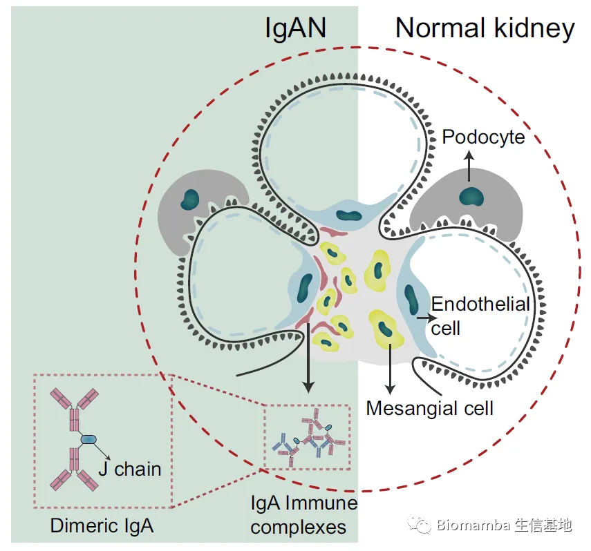
但奇怪的是，系膜细胞并不能表达任何IgA的受体，因此，IgAN真正的发病原因仍不得而知，这是这一领域亟待解决的问题。
02
测序技术
目前来说，主流的单细胞测序平台有两种，一种是基于液滴捕获（droplet based），这类测序捕获细胞数多但测序深度低；另一种是以SMAT-Seq为代表的技术，一般是经过流式或磁珠分选后进行建库，能对特定的细胞种类进行深度测序，因而捕获细胞数量少，但测序深度极高。
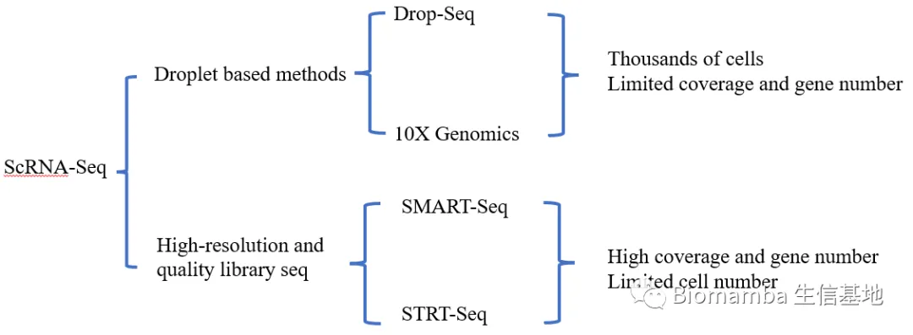
Methods
01
样本信息
通过肾组织活检收取了13个病人的肾脏穿刺样本。
在来自患者肾脏摘除的样本中选取宏观观测正常的组织用于对照。
抽取了六个患者与六个健康人的外周血。
这些受试对象的主要临床信息如下：
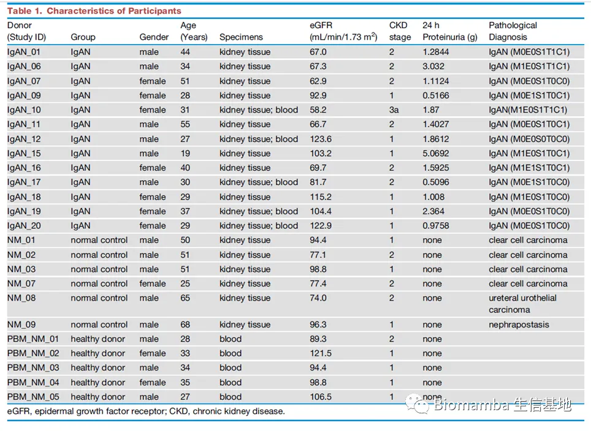
02
操作流程
下面这张图形摘要很好地展示了这篇文章的主要流程，具体的取材、制样过程不多赘述，感兴趣的同学可以去看看原文。大家知晓作者通过磁力分选，利用CD14、EPCAM等标志物分离得到单核/巨噬细胞、并分离肾小球组织用于STRT-Seq即可。
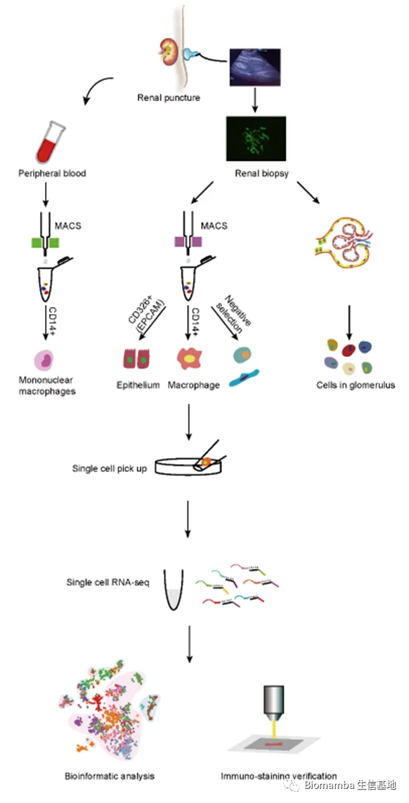
03
分析流程
首选STRT-Seq与我们之前所介绍的10X Genomics存在一些差异的，具体表现为前者每个细胞的测序深度更高、获得的基因(1000~12000)与分子数量（4000~600000）更多。与一般分析流程不同的是，作者将两组的细胞分别进行分群注释后利用scran包进行去批次整合（主流做法是先整合去批次，再进行分群注释）。在第一轮注释结束后，仍剩下两类细胞未能得到有效注释，因此作者利用了此前的一个snRNA-Seq的数据帮助注释（具体原理和过程可以参考这个：手把手教你做单细胞测序数据分析（五）、细胞类型注释——从入门到入土）。 在细胞通讯的分析之中，作者先在linux中利用cellphonedb进行了细胞互作的计算，后接R语言的igraph进行可视化（有些托大，其实可以通过cellchat、italk等R包一站式搞定，Biomamba后续的课程会出）。富集分析用的是DAVID，一个在线工具，不是很推荐，更新速度要比clusterprofiler慢很多（手把手教你做单细胞测序数据分析（七）—— 基因集富集分析）。
Results
01
分群
经基本的reads、count质控后，测得的八千多个细胞最终只剩下了3620个
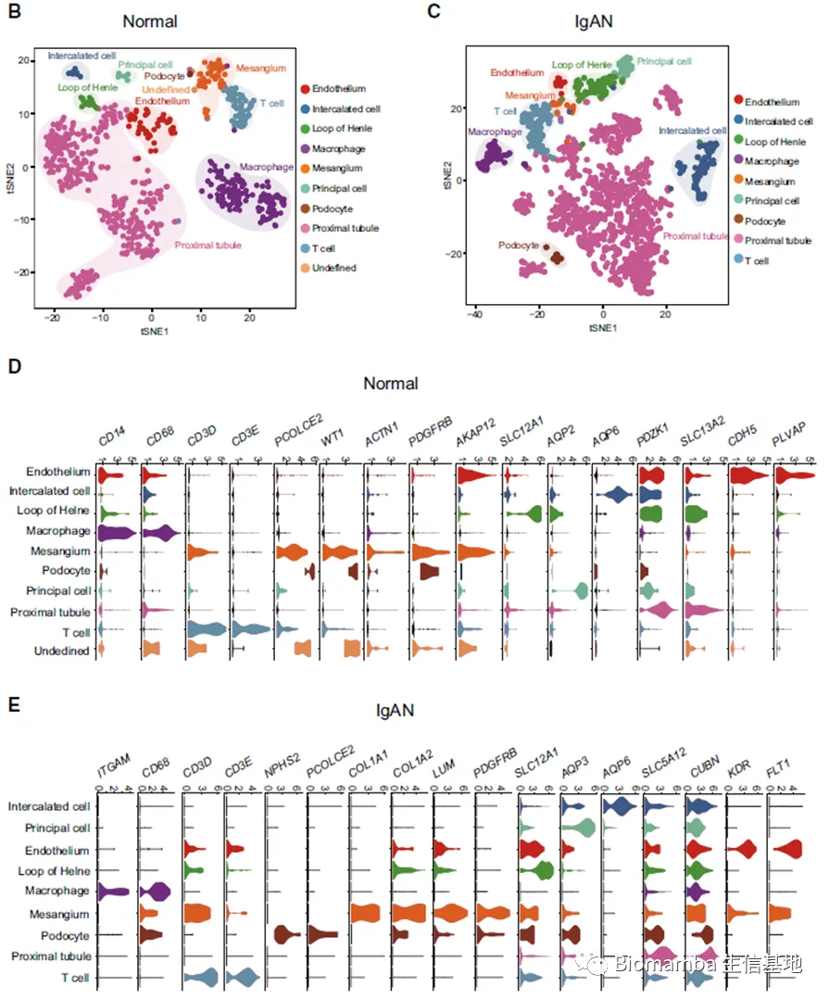
两组分开分群的方式确实有一些怪异，并且有些marker表达的特异性并不高，此前我在其他文章的阅读过程中发现过不错的marker展示（小鼠）：
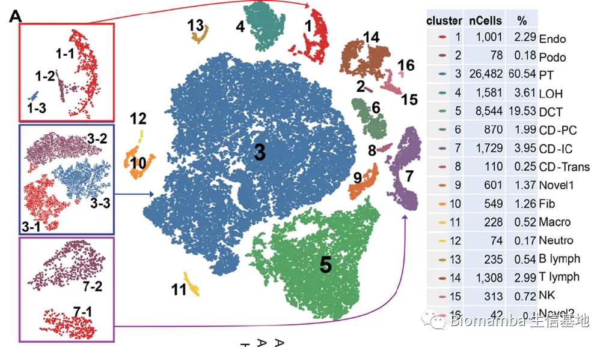
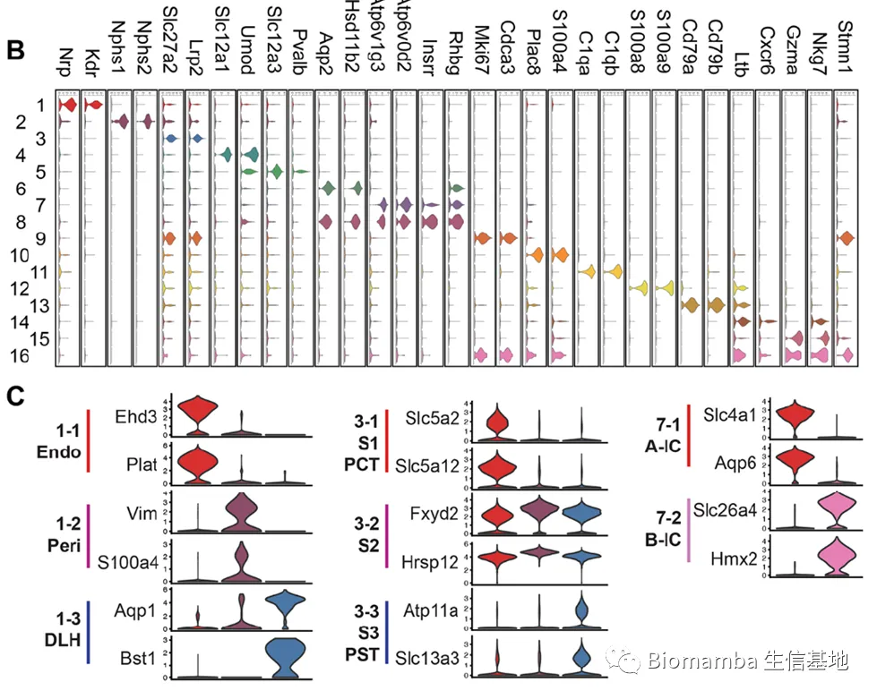
02
J chain
首先作者对两组间的系膜细胞进行了差异分析，从下面的火山图中我们可以较为明显的看到，JCHAIN在IgAN组中高表达，并且这一结果是可以通过免疫荧光被重复出来的。
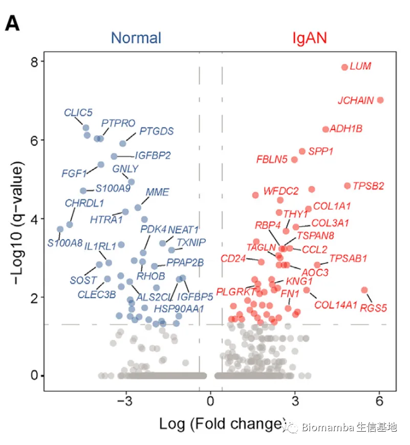
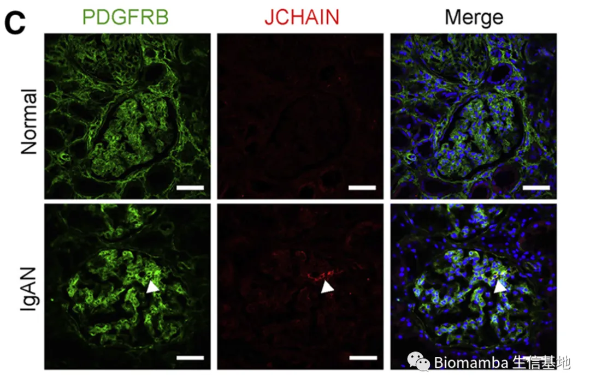
我们来了解一下J chain，有免疫背景的同学可能比较熟悉一些，IgA的完整结构如下图所示，一个IgA分子由两个Y型免疫球蛋白组成，而这两个Y连接的部分，正是这个J chain。换句话说，正是系膜细胞高表达JCHAIN，才给此处IgA的沉积带来了可能性。
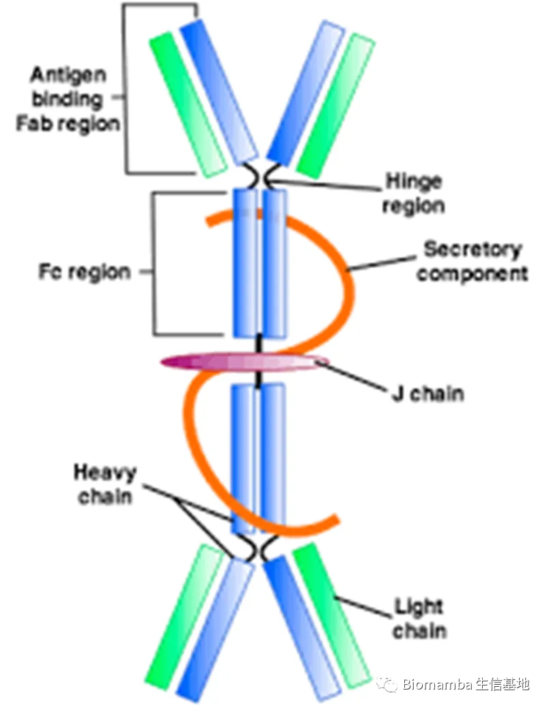
03
富集分析
差异基因的富集分析在两组间也有明显不同：在normal中被富集的通路主要与肾脏发育、分化相关，而在IgAN中被富集的通路主要体现在免疫应答和纤维化：
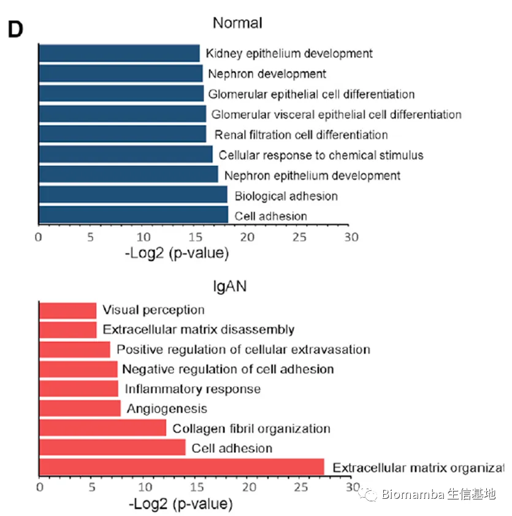
04
细胞通讯
在笔者的概念里，任何一个疾病的发生均是多因素共同作用的结果，基本发生过程中必然存在着细胞与细胞之间的互作。这里对两组分别进行了细胞通讯的预测，并发现由normal（下图左）到IgAN（下图中）的过程中，系膜细胞与其余细胞的互作均上升，而CD-IC与其他细胞的互作均下降（下图右）。
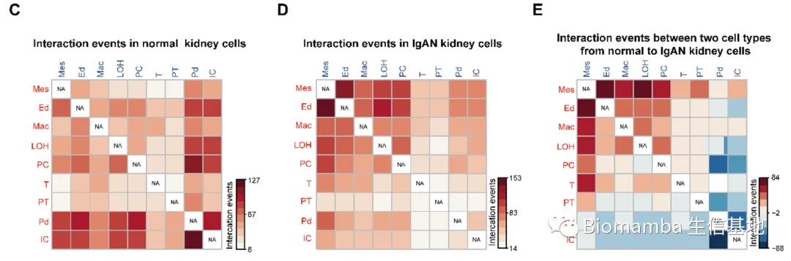
05
免疫
作为一种自身免疫类的疾病，IgAN的免疫微环境是最值得关注的，这里作者通过GSEA分析发现巨噬细胞的NOTCH通路、及与糖、氨基酸、脂类代谢的通路在IgAN中被显著富集；并且无论是肾脏浸润的巨噬细胞还是外周血中的巨噬细胞（终于提到外周血了）均在IgAN组表现出了激活的现象，因此作者认为巨噬细胞内的代谢通路改变重新编辑了IgAN的免疫微环境（我个人认为这一点有些牵强。。。）。
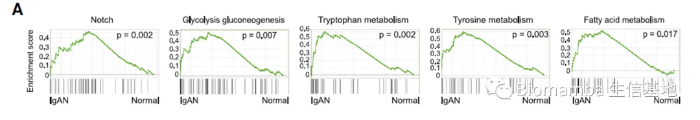
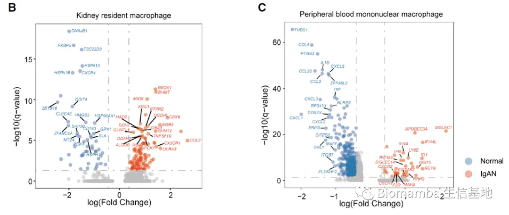
06
CD-IC的转变
作为一种自身免疫类的疾病，IgAN的免疫微环境是最值得关注的，此前作者已经发现了CD-IC在IgAN组中与其他细胞的互作全线下降，引起了作者的关注。通过CD-IC、CD-PC这两种细胞marker的展示，作者发现CD-IC中存在着一种特殊的类型——可以高表达CD-IC与CD-PC两种细胞的marker。这在之前的CKD研究中也已经被证实过了。
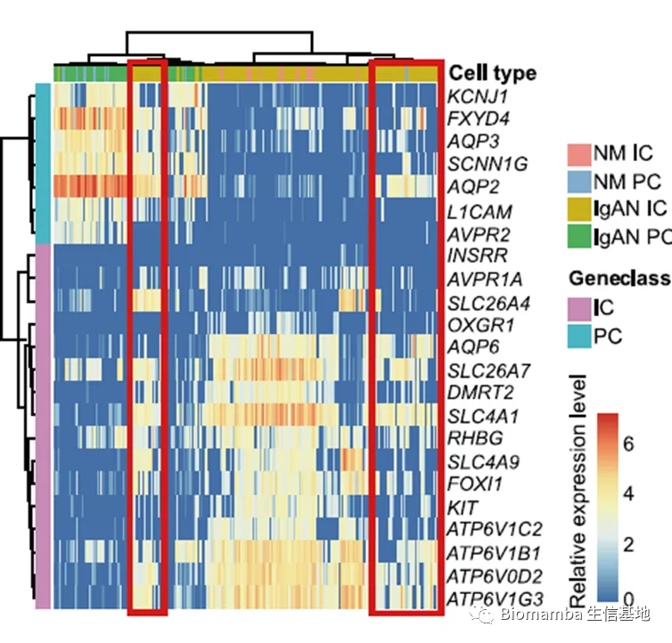
经拟时序分析后，作者发现这些CD-IC能够被分为3类IC1、IC2与纯正的CD-IC：
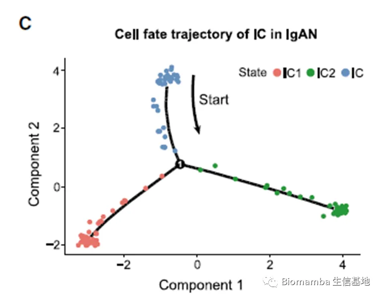
其中IC1与IC2便是上述提到能够表达CD-PC特征Gene的类群：
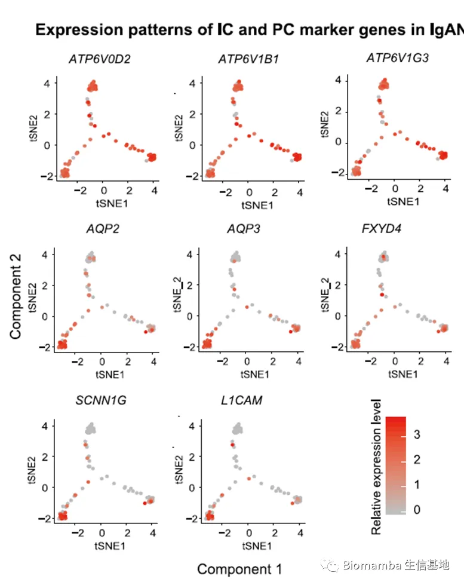
这两类细胞能够高表达WNT、FGF信号通路的基因，这是一些与先维护和EMT相关的基因。
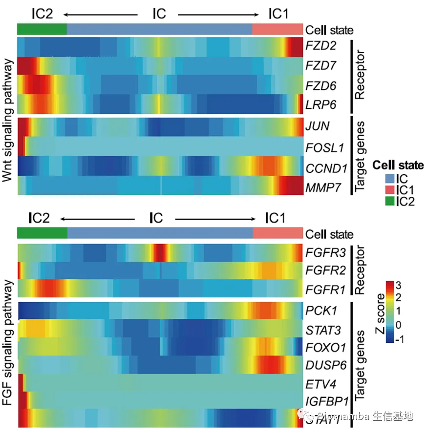
Discussion
作者的讨论我就不重复了，这里主要表达一下我对这篇文章的看法：
B站同步播出
https://www.bilibili.com/video/BV1ja411t7JL/

如何联系我们
 最近发现后台中有一些消息我没能及时看到并答复，微信后台中超过48h后便不允许回复读者消息，这里还是再给大家留一下答疑的客服号，方便大家随时交流。微信号可以点击喜欢作者 后自动回复里有。欢迎大家向我咨询或者提供建议。大家可以阅读完这几篇之后添加我：如何搜索公众号过往发布内容
答疑公约
笑一笑也就算了
最近发现后台中有一些消息我没能及时看到并答复，微信后台中超过48h后便不允许回复读者消息，这里还是再给大家留一下答疑的客服号，方便大家随时交流。微信号可以点击喜欢作者 后自动回复里有。欢迎大家向我咨询或者提供建议。大家可以阅读完这几篇之后添加我：如何搜索公众号过往发布内容
答疑公约
笑一笑也就算了